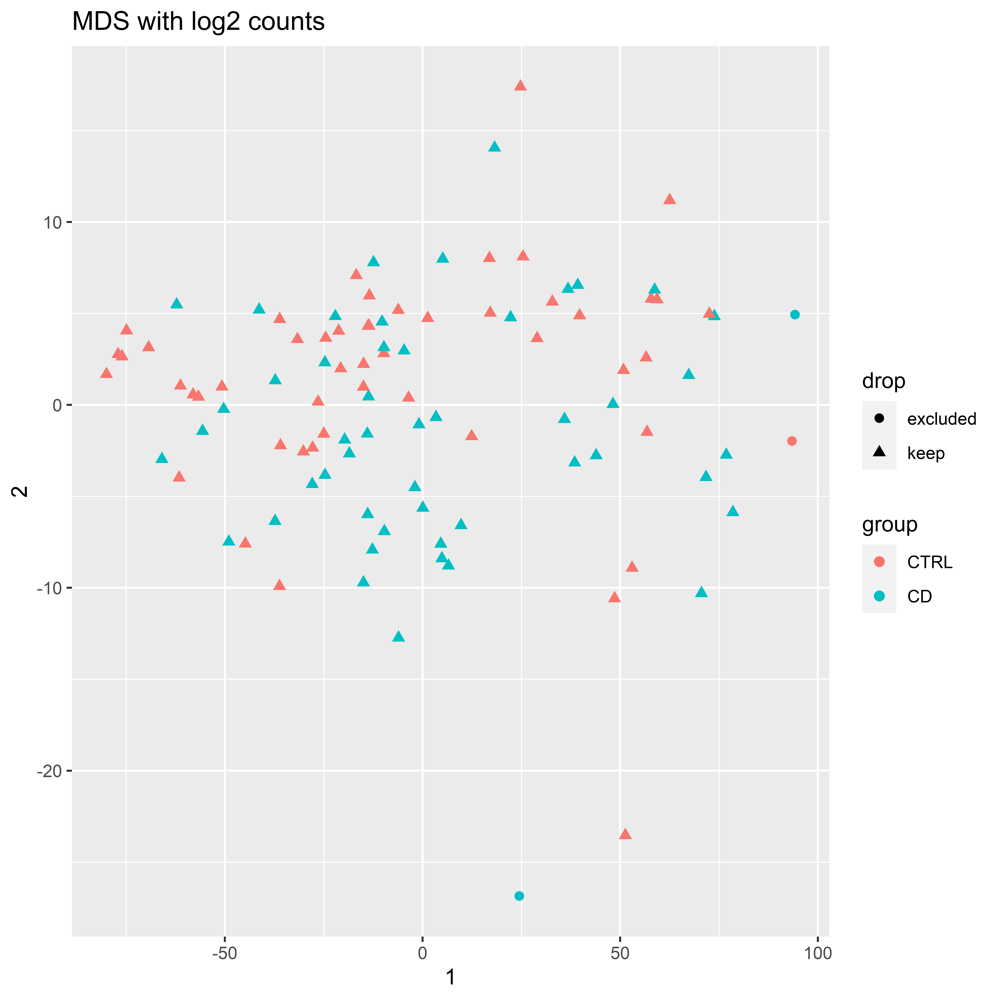

The Methylome in Female Adolescent Conduct Disorder: Neural Pathomechanisms and Environmental Risk Factors
Preprocessing
AG Chiocchetti
29 Dezember 2020
Last updated: 2021-04-05
Checks: 7 0
Knit directory: femNATCD_MethSeq/
This reproducible R Markdown analysis was created with workflowr (version 1.6.2). The Checks tab describes the reproducibility checks that were applied when the results were created. The Past versions tab lists the development history.
Great! Since the R Markdown file has been committed to the Git repository, you know the exact version of the code that produced these results.
Great job! The global environment was empty. Objects defined in the global environment can affect the analysis in your R Markdown file in unknown ways. For reproduciblity it’s best to always run the code in an empty environment.
The command set.seed(20210128) was run prior to running the code in the R Markdown file. Setting a seed ensures that any results that rely on randomness, e.g. subsampling or permutations, are reproducible.
Great job! Recording the operating system, R version, and package versions is critical for reproducibility.
Nice! There were no cached chunks for this analysis, so you can be confident that you successfully produced the results during this run.
Great job! Using relative paths to the files within your workflowr project makes it easier to run your code on other machines.
Great! You are using Git for version control. Tracking code development and connecting the code version to the results is critical for reproducibility.
The results in this page were generated with repository version acd87d4. See the Past versions tab to see a history of the changes made to the R Markdown and HTML files.
Note that you need to be careful to ensure that all relevant files for the analysis have been committed to Git prior to generating the results (you can use wflow_publish or wflow_git_commit). workflowr only checks the R Markdown file, but you know if there are other scripts or data files that it depends on. Below is the status of the Git repository when the results were generated:
Ignored files:
Ignored: .Rhistory
Ignored: .Rproj.user/
Ignored: analysis/.Rhistory
Ignored: code/.Rhistory
Ignored: data/Epicounts.csv
Ignored: data/Epimeta.csv
Ignored: data/Epitpm.csv
Ignored: data/KangUnivers.txt
Ignored: data/Kang_DataPreprocessing.RData
Ignored: data/Kang_dataset_genesMod_version2.txt
Ignored: data/PatMeta.csv
Ignored: data/ProcessedData.RData
Ignored: data/SNPCommonFilt.csv
Ignored: output/DMR_Results.csv
Ignored: output/GOres.xlsx
Ignored: output/LME_Results.csv
Ignored: output/ProcessedData.RData
Ignored: output/SEM_summary_groupEpi_M15.txt
Ignored: output/SEM_summary_groupEpi_M2.txt
Ignored: output/SEM_summary_groupEpi_M_all.txt
Ignored: output/SEM_summary_groupEpi_TopHit.txt
Ignored: output/SEM_summary_groupEpi_all.txt
Ignored: output/SEMplot_Epi_M15.html
Ignored: output/SEMplot_Epi_M15.png
Ignored: output/SEMplot_Epi_M15_files/
Ignored: output/SEMplot_Epi_M2.html
Ignored: output/SEMplot_Epi_M2.png
Ignored: output/SEMplot_Epi_M2_files/
Ignored: output/SEMplot_Epi_M_all.html
Ignored: output/SEMplot_Epi_M_all.png
Ignored: output/SEMplot_Epi_M_all_files/
Ignored: output/SEMplot_Epi_TopHit.html
Ignored: output/SEMplot_Epi_TopHit.png
Ignored: output/SEMplot_Epi_TopHit_files/
Ignored: output/SEMplot_Epi_all.html
Ignored: output/SEMplot_Epi_all.png
Ignored: output/SEMplot_Epi_all_files/
Ignored: output/circos_DMR_tags.svg
Ignored: output/circos_LME_tags.svg
Ignored: output/clinFact.RData
Ignored: output/dds_filt_analyzed.RData
Ignored: output/designh0.RData
Ignored: output/designh1.RData
Ignored: output/envFact.RData
Ignored: output/gostres.pdf
Ignored: output/modelFact.RData
Ignored: output/resdmr.RData
Ignored: output/resultsdmr_table.RData
Ignored: output/table1_filtered.Rmd
Ignored: output/table1_filtered.docx
Ignored: output/table1_unfiltered.Rmd
Ignored: output/table1_unfiltered.docx
Ignored: setup_built.R
Note that any generated files, e.g. HTML, png, CSS, etc., are not included in this status report because it is ok for generated content to have uncommitted changes.
These are the previous versions of the repository in which changes were made to the R Markdown (analysis/01_Preprocessing.Rmd) and HTML (docs/01_Preprocessing.html) files. If you’ve configured a remote Git repository (see ?wflow_git_remote), click on the hyperlinks in the table below to view the files as they were in that past version.
| File | Version | Author | Date | Message |
|---|---|---|---|---|
| Rmd | acd87d4 | achiocch | 2021-04-05 | wflow_publish(c(“analysis/", "code/”, "docs/*")) |
| Rmd | b6c6b33 | achiocch | 2021-04-05 | updated GO function, and model def |
| html | 4ea1bba | achiocch | 2021-02-25 | Build site. |
| Rmd | 6c21638 | achiocch | 2021-02-25 | wflow_publish(c(“analysis/", "code/”, "docs/*"), update = F) |
| html | 6c21638 | achiocch | 2021-02-25 | wflow_publish(c(“analysis/", "code/”, "docs/*"), update = F) |
source(paste0(Home,"/code/custom_functions.R"))Lade nötiges Paket: RCircosInitializing rawdata
## load Data ####
EpiData = fread(paste0(Home,"/data/Epicounts.csv"), header = T, data.table=F)
EpiData = EpiData %>% column_to_rownames("ID")
EpiMeta = fread(paste0(Home,"/data/Epimeta.csv"), header = T, data.table=F)
EpiMeta = EpiMeta %>% column_to_rownames("ID")
Patdata = fread(paste0(Home,"/data/PatMeta.csv"), header = T, data.table=F)
Patdata = Patdata %>% column_to_rownames("V1")
SNPdata = fread(paste0(Home,"/data/SNPCommonFilt.csv"), header = T, data.table=F)
SNPdata = SNPdata %>% column_to_rownames("V1")
Patdata$group = factor(Patdata$group, c(0,1), c("CTRL", "CD"))
Patdata$group = relevel(Patdata$group, "CTRL")
Patdata$Age = Patdata$Alter
Patdata$site = factor(substr(Patdata$ID_femNAT, 1,2),
c("01","02", "10", "11", "12"), c("FRA", "AAC", "BCN", "BLB", "SZG"))
Patdata$Pubstat = as.factor(gsub(" ", "", Patdata$Pubstat))
Patdata$contraceptives = yesnofac(Patdata$contraceptives)
Patdata$Ever_smoked = factor(Patdata$Ever_smoked, c(0, 1,2), c(NA, "no", "yes"))
allowedvalues=as.character(c(0,1,8, NA))
for (i in 1:ncol(Patdata)) {
if(sum(Patdata[,i] %in% allowedvalues)==nrow(Patdata)){
Patdata[,i] = yesnofac(Patdata[,i])
print(colnames(Patdata)[i])
}
}[1] "smoke"
[1] "drugs"
[1] "aggress"
[1] "stress"
[1] "mpsych_4_12"
[1] "mpsych_gt12"
[1] "ppsych_le12"
[1] "inconsist"
[1] "single"
[1] "disharm"
[1] "isolation"
[1] "psych_fam"
[1] "Dep_life"
[1] "anp_life"
[1] "CD_life"
[1] "ADHD_life"
[1] "TIC_life"
[1] "ODD_life"
[1] "DMDD_life"
[1] "Alk_life"
[1] "SUD_life"
[1] "Anx_life"
[1] "OCD_life"
[1] "PTSD_life"
[1] "Elim_life"
[1] "Eat_life"
[1] "Oth_life"
[1] "Bip_life"
[1] "Scz_life"
[1] "medication"SNPdatafilt = SNPdata[complete.cases(SNPdata),]
display_tab(head(EpiMeta))| CHR | start | stop | gene | feature | cpg | tf_binding | raw_gene | distance | samples_per_target | mean | std | |
|---|---|---|---|---|---|---|---|---|---|---|---|---|
| chr1+_10482_10487 | 1 | 10482 | 10487 | DDX11L1 | upstream | NoCpg | TAF7_(SQ-8)//ZBTB33 | DDX11L1 | 0 | 100 | 20.569 | 13.877 |
| chr1+_10495_10500 | 1 | 10495 | 10500 | DDX11L1 | upstream | NoCpg | TAF7_(SQ-8)//ZBTB33 | DDX11L1 | 0 | 98 | 10.608 | 9.030 |
| chr1+_10587_10592 | 1 | 10587 | 10592 | DDX11L1 | upstream | NoCpg | DDX11L1 | 0 | 85 | 6.176 | 6.170 | |
| chr1+_10639_10644 | 1 | 10639 | 10644 | DDX11L1 | upstream | NoCpg | DDX11L1 | 0 | 54 | 0.941 | 1.241 | |
| chr1+_10668_10673 | 1 | 10668 | 10673 | DDX11L1 | upstream | NoCpg | DDX11L1 | 0 | 51 | 0.922 | 1.272 | |
| chr1+_10697_10702 | 1 | 10697 | 10702 | DDX11L1 | upstream | NoCpg | DDX11L1 | 0 | 65 | 1.029 | 1.085 |
display_tab(head(EpiData))| ID_01_0023 | ID_01_0028 | ID_01_0029 | ID_01_0056 | ID_01_0074 | ID_01_0075 | ID_01_0145 | ID_01_0173 | ID_01_0185 | ID_01_0209 | ID_01_0221 | ID_01_0248 | ID_01_0249 | ID_01_0260 | ID_01_0284 | ID_01_0286 | ID_01_0289 | ID_01_0292 | ID_01_0293 | ID_01_0294 | ID_01_0295 | ID_01_0311 | ID_01_0322 | ID_01_0325 | ID_01_0343 | ID_01_0362 | ID_01_0365 | ID_01_0379 | ID_01_0382 | ID_01_0383 | ID_01_0385 | ID_01_0386 | ID_01_0400 | ID_01_0431 | ID_01_0433 | ID_01_0439 | ID_01_0500 | ID_01_0515 | ID_02_0009 | ID_02_0016 | ID_02_0021 | ID_02_0022 | ID_02_0032 | ID_02_0038 | ID_02_0086 | ID_02_0090 | ID_02_0137 | ID_02_0140 | ID_02_0184 | ID_02_0189 | ID_02_0192 | ID_02_0197 | ID_02_0201 | ID_02_0211 | ID_02_0233 | ID_02_0244 | ID_02_0269 | ID_02_0275 | ID_02_0302 | ID_02_0304 | ID_02_0333 | ID_02_0354 | ID_02_0394 | ID_02_0438 | ID_02_0497 | ID_02_0535 | ID_10_0006 | ID_10_0007 | ID_10_0008 | ID_10_0017 | ID_10_0022 | ID_10_0025 | ID_10_0029 | ID_10_0032 | ID_10_0034 | ID_10_0037 | ID_10_0041 | ID_10_0044 | ID_10_0045 | ID_11_0001 | ID_11_0002 | ID_11_0003 | ID_11_0006 | ID_11_0007 | ID_11_0010 | ID_11_0013 | ID_11_0017 | ID_11_0018 | ID_11_0046 | ID_11_0056 | ID_11_0058 | ID_12_0003 | ID_12_0008 | ID_12_0011 | ID_12_0014 | ID_12_0017 | ID_12_0021 | ID_12_0023 | ID_12_0025 | ID_12_0026 | ID_12_0028 | ID_12_0029 | |
|---|---|---|---|---|---|---|---|---|---|---|---|---|---|---|---|---|---|---|---|---|---|---|---|---|---|---|---|---|---|---|---|---|---|---|---|---|---|---|---|---|---|---|---|---|---|---|---|---|---|---|---|---|---|---|---|---|---|---|---|---|---|---|---|---|---|---|---|---|---|---|---|---|---|---|---|---|---|---|---|---|---|---|---|---|---|---|---|---|---|---|---|---|---|---|---|---|---|---|---|---|---|---|
| chr1+_10482_10487 | 32 | 21 | 29 | 22 | 16 | 1 | 22 | 10 | 18 | 17 | 37 | 39 | 9 | 2 | 10 | 6 | 13 | 11 | 23 | 26 | 15 | 10 | 27 | 22 | 23 | 23 | 6 | 24 | 11 | 12 | 19 | 1 | 6 | 16 | 16 | 38 | 1 | 7 | 12 | 3 | 14 | 9 | 10 | 11 | 14 | 16 | 16 | 8 | 24 | 45 | 41 | 52 | 17 | 16 | 15 | 24 | 26 | 48 | 22 | 62 | 2 | 0 | 20 | 0 | 9 | 8 | 16 | 19 | 20 | 23 | 11 | 21 | 32 | 41 | 42 | 43 | 27 | 30 | 20 | 11 | 14 | 45 | 44 | 40 | 8 | 3 | 12 | 5 | 4 | 9 | 11 | 29 | 18 | 20 | 43 | 12 | 43 | 33 | 37 | 40 | 33 | 54 |
| chr1+_10495_10500 | 20 | 4 | 22 | 9 | 12 | 11 | 9 | 10 | 9 | 21 | 19 | 6 | 7 | 3 | 10 | 2 | 1 | 7 | 9 | 17 | 5 | 21 | 21 | 12 | 3 | 24 | 9 | 19 | 2 | 12 | 16 | 7 | 6 | 7 | 14 | 10 | 2 | 2 | 3 | 4 | 2 | 1 | 13 | 6 | 0 | 20 | 1 | 8 | 3 | 40 | 4 | 31 | 9 | 11 | 2 | 16 | 7 | 8 | 18 | 42 | 0 | 0 | 2 | 1 | 2 | 7 | 2 | 8 | 3 | 5 | 3 | 22 | 4 | 18 | 31 | 12 | 7 | 7 | 9 | 1 | 5 | 10 | 13 | 10 | 9 | 4 | 3 | 1 | 0 | 9 | 22 | 5 | 11 | 15 | 22 | 8 | 22 | 15 | 26 | 18 | 24 | 37 |
| chr1+_10587_10592 | 1 | 13 | 13 | 8 | 14 | 1 | 7 | 8 | 7 | 0 | 19 | 7 | 2 | 3 | 7 | 6 | 5 | 9 | 3 | 9 | 6 | 24 | 8 | 3 | 6 | 0 | 3 | 2 | 1 | 5 | 3 | 2 | 1 | 0 | 6 | 4 | 0 | 2 | 2 | 1 | 0 | 3 | 8 | 7 | 16 | 9 | 0 | 8 | 0 | 31 | 5 | 7 | 4 | 2 | 8 | 3 | 11 | 7 | 2 | 17 | 0 | 1 | 0 | 8 | 3 | 6 | 0 | 17 | 1 | 12 | 5 | 9 | 10 | 5 | 23 | 4 | 3 | 3 | 0 | 8 | 4 | 0 | 14 | 3 | 5 | 0 | 3 | 0 | 0 | 0 | 1 | 8 | 0 | 18 | 7 | 5 | 8 | 6 | 19 | 4 | 20 | 18 |
| chr1+_10639_10644 | 0 | 3 | 0 | 4 | 0 | 2 | 0 | 0 | 0 | 0 | 3 | 1 | 1 | 0 | 2 | 0 | 2 | 1 | 0 | 1 | 0 | 4 | 0 | 1 | 1 | 1 | 2 | 4 | 0 | 1 | 0 | 2 | 0 | 1 | 1 | 0 | 0 | 0 | 0 | 1 | 2 | 1 | 0 | 6 | 2 | 0 | 0 | 0 | 1 | 1 | 1 | 1 | 0 | 1 | 0 | 3 | 1 | 3 | 3 | 1 | 0 | 0 | 1 | 0 | 1 | 0 | 0 | 0 | 0 | 0 | 1 | 1 | 0 | 5 | 1 | 3 | 1 | 0 | 0 | 0 | 3 | 1 | 0 | 1 | 1 | 0 | 0 | 0 | 0 | 0 | 0 | 1 | 0 | 0 | 1 | 1 | 0 | 3 | 0 | 1 | 2 | 1 |
| chr1+_10668_10673 | 1 | 2 | 2 | 0 | 1 | 2 | 0 | 0 | 0 | 0 | 0 | 2 | 0 | 0 | 0 | 0 | 3 | 0 | 0 | 1 | 0 | 1 | 0 | 1 | 0 | 3 | 0 | 3 | 0 | 0 | 1 | 2 | 1 | 0 | 0 | 1 | 0 | 0 | 0 | 0 | 0 | 0 | 0 | 1 | 1 | 4 | 1 | 0 | 0 | 2 | 1 | 1 | 0 | 2 | 2 | 0 | 1 | 3 | 1 | 0 | 0 | 1 | 0 | 0 | 7 | 0 | 0 | 0 | 1 | 0 | 1 | 1 | 1 | 2 | 5 | 2 | 0 | 0 | 1 | 1 | 1 | 0 | 3 | 1 | 0 | 0 | 0 | 0 | 0 | 0 | 3 | 1 | 0 | 0 | 2 | 0 | 4 | 3 | 1 | 3 | 1 | 1 |
| chr1+_10697_10702 | 1 | 2 | 2 | 1 | 1 | 0 | 0 | 2 | 0 | 4 | 0 | 1 | 1 | 0 | 1 | 1 | 0 | 0 | 2 | 4 | 1 | 0 | 0 | 0 | 3 | 1 | 0 | 1 | 3 | 1 | 0 | 1 | 0 | 1 | 0 | 1 | 0 | 0 | 3 | 0 | 0 | 0 | 0 | 1 | 2 | 1 | 0 | 4 | 0 | 0 | 3 | 1 | 0 | 1 | 0 | 1 | 1 | 4 | 1 | 0 | 2 | 1 | 1 | 1 | 1 | 1 | 1 | 0 | 1 | 2 | 3 | 1 | 0 | 1 | 3 | 0 | 1 | 1 | 1 | 3 | 1 | 0 | 0 | 1 | 0 | 0 | 1 | 0 | 0 | 2 | 1 | 0 | 1 | 2 | 2 | 1 | 3 | 3 | 1 | 1 | 1 | 0 |
display_tab(head(Patdata))| lfd.Nr | ID_femNAT | DateIncome | X260_280 | ng_per_ul | ul | contraceptives | group | Diagnose | Alter | Pubstat | Timediff_ExtrPurification | Reliability | LCL | Prosp_Distance | cigday_1 | Ever_smoked | age_months | scrsympt | suppsympt | tsympt | smoke | drugs | aggress | stress | mpsych_4_12 | mpsych_gt12 | ppsych_le12 | inconsist | single | disharm | isolation | mother_school | mother_prof | father_school | father_prof | psych_fam | n_trauma | Dep_life | anp_life | CD_life | ADHD_life | TIC_life | ODD_life | DMDD_life | Alk_life | SUD_life | Anx_life | OCD_life | PTSD_life | Elim_life | Eat_life | Oth_life | Bip_life | Scz_life | medication | reads_per_sample | targets_per_sample | Age | site | |
|---|---|---|---|---|---|---|---|---|---|---|---|---|---|---|---|---|---|---|---|---|---|---|---|---|---|---|---|---|---|---|---|---|---|---|---|---|---|---|---|---|---|---|---|---|---|---|---|---|---|---|---|---|---|---|---|---|---|---|---|---|
| ID_01_0023 | 1 | 01-0023 | 2014-08-28 | 1.853 | 1135 | 5 | no | CTRL | control | 17.2 | Latepubertal | 4 | 0.462 | 0 | yes | 205 | 0 | 0 | 0 | no | no | no | no | no | no | no | no | no | yes | no | 6 | 6 | 6 | 6 | yes | 0 | no | no | no | no | no | no | no | no | no | no | no | no | no | no | no | no | no | no | 10313348 | 1087812 | 17.2 | FRA | ||
| ID_01_0028 | 2 | 01-0028 | 2014-05-09 | 1.813 | 363 | 14 | no | CTRL | control | 15.2 | Latepubertal | 5 | 0.501 | 0 | no | 182 | 0 | 0 | 0 | yes | no | no | no | no | no | no | no | no | yes | no | 6 | 8 | 6 | 8 | NA | 2 | yes | no | no | no | no | no | no | no | no | no | no | no | no | no | no | no | no | no | 11522586 | 1091132 | 15.2 | FRA | ||
| ID_01_0029 | 3 | 01-0029 | 2014-05-19 | 1.831 | 298 | 17 | no | CTRL | control | 17.5 | Postpubertal | 6 | 0.219 | 0 | yes | 209 | 0 | 0 | 0 | yes | no | no | yes | no | no | no | no | no | no | no | 6 | 11 | 6 | 11 | no | 1 | no | no | no | no | no | no | no | no | no | no | no | no | no | no | no | no | no | no | 10266110 | 1069619 | 17.5 | FRA | ||
| ID_01_0056 | 4 | 01-0056 | 2014-06-12 | 1.850 | 555 | 9 | no | CTRL | control | 16.9 | Postpubertal | 1 | duplicate | 0.254 | 0 | no | 203 | 0 | 0 | 0 | no | no | no | no | no | no | no | NA | no | no | no | NA | 12 | NA | 12 | yes | 1 | no | no | no | no | no | no | no | no | no | no | no | no | no | no | no | no | no | no | 10098940 | 1076017 | 16.9 | FRA | |
| ID_01_0074 | 5 | 01-0074 | 2014-08-28 | 1.842 | 1220 | 5 | no | CD | case | 15.5 | Latepubertal | 3 | 0.509 | 0 | no | 186 | 3 | 1 | 4 | no | no | no | no | no | no | NA | NA | yes | no | no | 6 | 11 | 6 | 6 | yes | 4 | no | no | yes | yes | no | yes | no | no | no | no | no | yes | no | no | no | no | no | yes | 9715101 | 1058814 | 15.5 | FRA | ||
| ID_01_0075 | 6 | 01-0075 | 2014-09-08 | 1.862 | 508 | 10 | no | CTRL | control | 16.0 | Latepubertal | 7 | 0.474 | 0 | no | 190 | 0 | 0 | 0 | no | no | no | no | no | no | no | no | no | no | no | 7 | 5 | 1 | 0 | yes | 0 | no | no | no | no | no | no | no | no | no | no | no | no | no | no | no | no | no | no | 5664046 | 823351 | 16.0 | FRA |
Total number of samples: 102
Total number of Tags: 2 271 932
Tags in TFbinding sites: 415 218
Tags in CpGs:
Var1
Freq
cpg
265576
NoCpg
2006356
Tags per feature
Var1
Freq
downstream
37759
exonic
110147
intergenic
986333
intronic
887762
ncR0_exonic
13324
ncR0_intronic
61552
ncR0_splicing
4
ncR0_UTR3
415
ncR0_UTR5
670
splicing
1952
upstream
104665
UTR3
26178
UTR5
41171
Sample descriptives
index = sample(1:nrow(EpiData), 10000)
Sampleddata = EpiData[index,]
boxplot_counts = function(plotsubset, maintitle, colorcode) {
boxplot(log2(plotsubset+1), main = maintitle, col = Dark8[as.factor(Patdata[,colorcode])], names=NA,
ylab = "log2 transformed", xlab="samples")
legend("topleft", legend = levels(Patdata[,colorcode]), pch = 16, col = Dark8[1:length(unique(Patdata[,colorcode]))])
}
barplot_counts = function(DF, maintitle, colorcode) {
barplot(log2(DF[,"reads_per_sample"]), main = maintitle, col = Dark8[as.factor(DF[,colorcode])], names="",
ylab = "log2 transformed",xlab="samples")
legend("bottomleft", legend = levels(DF[,colorcode]), pch = 16, col = Dark8[1:length(unique(DF[,colorcode]))])
}
boxplot_counts(Sampleddata, "raw counts", "group")
boxplot_counts(Sampleddata, "raw counts", "site")
barplot_counts(Patdata, "total reads", "group")
barplot_counts(Patdata, "total reads", "site")
Average Reads per Sample 10 059 904
Average Targets detected per sample 1 009 668
N Targets detected in at least 50% of samples 904 845
Sample stats
# Patient specific covariates ####
clinFact = c("site", "Age", "Pubstat")
modelFact = c("Age")
Patdata$int_dis = with(Patdata, (Dep_life=="yes" |
Anx_life=="yes" |
OCD_life=="yes" |
#PTSD_life=="yes" |
#Eat_life=="yes" |
DMDD_life=="yes")*1)
Patdata$int_dis = yesnofac(Patdata$int_dis)
clinFact = c(clinFact, "int_dis")
modelFact = c(modelFact,"int_dis")
# Patdata$ext_dis = with(Patdata, (ADHD_life=="yes" |
# ODD_life=="yes" |
# anp_life=="yes") * 1)
# Patdata$ext_dis = yesnofac(Patdata$ext_dis)
# clinFact = c(clinFact, "ext_dis")
# Patdata$add_dis = with(Patdata, (Alk_life=="yes" |
# SUD_life=="yes") * 1)
#
# Patdata$add_dis = yesnofac(Patdata$add_dis)
# clinFact = c(clinFact, "add_dis")
clinFact = c(clinFact, "medication", "contraceptives", "cigday_1")
modelFact = c(modelFact,"medication", "contraceptives", "cigday_1")
# Environmental Factors ####
envFact = c()
#maternal smoking,
Patdata$Matsmk = with(Patdata, (smoke=="yes")*1)
Patdata$Matsmk = factor(Patdata$Matsmk,levels = c(0,1), labels = c("no", "yes"))
envFact = c(envFact, "Matsmk")
#violence exposure
Patdata$Matagg = with(Patdata, (aggress=="yes")*1)
Patdata$Matagg = factor(Patdata$Matagg,levels = c(0,1), labels = c("no", "yes"))
envFact = c(envFact, "Matagg")
# # self-reported maternal stress experience during pregnancy
# Patdata$Matstr = with(Patdata, (stress=="yes")*1)
# Patdata$Matstr = factor(Patdata$Matstr,levels = c(0,1), labels = c("no", "yes"))
# envFact = c(envFact, "Matstr")
# # psychiatric disorders in the family
# Patdata$PsychScore = with(Patdata, rowSums(cbind(mpsych_4_12=="yes", mpsych_gt12=="yes", ppsych_le12=="yes", psych_fam=="yes"), na.rm=T))
# envFact = c(envFact, "PsychScore")
#adverse family situation
Patdata$FamScore = with(Patdata, rowSums(cbind(#single=="yes",
disharm=="yes",
isolation=="yes"),
na.rm=T))
envFact = c(envFact, "FamScore")
#parental education status
Patdata$EduPar = with(Patdata,
apply(cbind(apply(cbind(mother_school, mother_prof), 1, max, na.rm=T),
apply(cbind(father_school, father_prof), 1, max, na.rm=T)),
1, mean, na.rm=T))Warning in FUN(newX[, i], ...): kein nicht-fehlendes Argument für max; gebe -Inf
zurück
Warning in FUN(newX[, i], ...): kein nicht-fehlendes Argument für max; gebe -Inf
zurück
Warning in FUN(newX[, i], ...): kein nicht-fehlendes Argument für max; gebe -Inf
zurück
Warning in FUN(newX[, i], ...): kein nicht-fehlendes Argument für max; gebe -Inf
zurück
Warning in FUN(newX[, i], ...): kein nicht-fehlendes Argument für max; gebe -Inf
zurück
Warning in FUN(newX[, i], ...): kein nicht-fehlendes Argument für max; gebe -Inf
zurück
Warning in FUN(newX[, i], ...): kein nicht-fehlendes Argument für max; gebe -Inf
zurück
Warning in FUN(newX[, i], ...): kein nicht-fehlendes Argument für max; gebe -Inf
zurück
Warning in FUN(newX[, i], ...): kein nicht-fehlendes Argument für max; gebe -Inf
zurück
Warning in FUN(newX[, i], ...): kein nicht-fehlendes Argument für max; gebe -Inf
zurück
Warning in FUN(newX[, i], ...): kein nicht-fehlendes Argument für max; gebe -Inf
zurück
Warning in FUN(newX[, i], ...): kein nicht-fehlendes Argument für max; gebe -Inf
zurück
Warning in FUN(newX[, i], ...): kein nicht-fehlendes Argument für max; gebe -Inf
zurück
Warning in FUN(newX[, i], ...): kein nicht-fehlendes Argument für max; gebe -Inf
zurück
Warning in FUN(newX[, i], ...): kein nicht-fehlendes Argument für max; gebe -Inf
zurück
Warning in FUN(newX[, i], ...): kein nicht-fehlendes Argument für max; gebe -Inf
zurück
Warning in FUN(newX[, i], ...): kein nicht-fehlendes Argument für max; gebe -Inf
zurück
Warning in FUN(newX[, i], ...): kein nicht-fehlendes Argument für max; gebe -Inf
zurück
Warning in FUN(newX[, i], ...): kein nicht-fehlendes Argument für max; gebe -Inf
zurück
Warning in FUN(newX[, i], ...): kein nicht-fehlendes Argument für max; gebe -Inf
zurück
Warning in FUN(newX[, i], ...): kein nicht-fehlendes Argument für max; gebe -Inf
zurück
Warning in FUN(newX[, i], ...): kein nicht-fehlendes Argument für max; gebe -Inf
zurück
Warning in FUN(newX[, i], ...): kein nicht-fehlendes Argument für max; gebe -Inf
zurück
Warning in FUN(newX[, i], ...): kein nicht-fehlendes Argument für max; gebe -Inf
zurück
Warning in FUN(newX[, i], ...): kein nicht-fehlendes Argument für max; gebe -Inf
zurückPatdata$EduPar[is.infinite(Patdata$EduPar)]=NA
envFact = c(envFact, "EduPar")
# number of trauma
envFact = c(envFact, "n_trauma")
cormat = cor(apply(Patdata[,c("group", unique(c(modelFact, clinFact)))] %>% mutate_all(as.numeric), 2, minmax_scaling),
use = "pairwise.complete.obs")
corrplot(cormat, order = "hclust", main="clustered and scaled correlations")
save(clinFact, file=paste0(Home,"/output/clinFact.RData"))
save(modelFact, file=paste0(Home,"/output/modelFact.RData"))
save(envFact, file=paste0(Home,"/output/envFact.RData"))# test differences between site ####
## add IQ and Anx here
tablevariates = c("site","Age","tsympt", "Pubstat", "cigday_1","contraceptives")
genomicvariates = c("X260_280","ng_per_ul", "Timediff_ExtrPurification","reads_per_sample" )
res = table_sumstat(Patdata,
columns=unique(c(tablevariates, clinFact,modelFact, envFact, genomicvariates) ),
groupfactor = "group")
res
--------Summary descriptives table by 'group'---------
________________________________________________________________________
CTRL CD p.overall
N=51 N=51
¯¯¯¯¯¯¯¯¯¯¯¯¯¯¯¯¯¯¯¯¯¯¯¯¯¯¯¯¯¯¯¯¯¯¯¯¯¯¯¯¯¯¯¯¯¯¯¯¯¯¯¯¯¯¯¯¯¯¯¯¯¯¯¯¯¯¯¯¯¯¯¯
site: 0.223
FRA 24 (47.1%) 14 (27.5%)
AAC 10 (19.6%) 18 (35.3%)
BCN 5 (9.80%) 8 (15.7%)
BLB 6 (11.8%) 6 (11.8%)
SZG 6 (11.8%) 5 (9.80%)
Age 16.1 (1.58) 15.8 (1.48) 0.295
tsympt 0.00 (0.00) 4.75 (2.50) <0.001
Pubstat: 0.155
Latepubertal 36 (70.6%) 43 (84.3%)
Postpubertal 15 (29.4%) 8 (15.7%)
cigday_1 0.51 (2.06) 6.06 (6.50) <0.001
contraceptives: 0.019
no 41 (80.4%) 29 (56.9%)
yes 10 (19.6%) 22 (43.1%)
int_dis: <0.001
no 46 (90.2%) 20 (39.2%)
yes 5 (9.80%) 31 (60.8%)
medication: 0.001
no 48 (94.1%) 33 (64.7%)
yes 3 (5.88%) 18 (35.3%)
Matsmk: 0.030
no 40 (81.6%) 24 (58.5%)
yes 9 (18.4%) 17 (41.5%)
Matagg: 0.001
no 48 (98.0%) 32 (72.7%)
yes 1 (2.04%) 12 (27.3%)
FamScore 0.20 (0.49) 0.76 (0.81) <0.001
EduPar 7.97 (2.80) 6.05 (2.60) 0.002
n_trauma 0.84 (1.10) 2.20 (1.81) <0.001
X260_280 1.84 (0.02) 1.84 (0.02) 0.976
ng_per_ul 641 (250) 724 (296) 0.133
Timediff_ExtrPurification 4.39 (3.00) 4.10 (3.48) 0.648
reads_per_sample 10843361 (5589726) 9276447 (4314540) 0.116
¯¯¯¯¯¯¯¯¯¯¯¯¯¯¯¯¯¯¯¯¯¯¯¯¯¯¯¯¯¯¯¯¯¯¯¯¯¯¯¯¯¯¯¯¯¯¯¯¯¯¯¯¯¯¯¯¯¯¯¯¯¯¯¯¯¯¯¯¯¯¯¯ export2word(res, file = paste0(Home,"/output/table1_unfiltered.docx"))QC Filter and Normalize
filter SNPs
form0=paste0("~0+",paste0(modelFact, collapse="+"))
designh0 = as.formula(form0)
designh1 = as.formula(paste(form0," + group"))
save(designh0, file=paste0(Home,"/output/designh0.RData"))
save(designh1, file=paste0(Home,"/output/designh1.RData"))
ddsMat <- DESeqDataSetFromMatrix(countData = EpiData,
colData = Patdata,
rowData = EpiMeta,
design = designh1) the design formula contains one or more numeric variables with integer values,
specifying a model with increasing fold change for higher values.
did you mean for this to be a factor? if so, first convert
this variable to a factor using the factor() function the design formula contains one or more numeric variables that have mean or
standard deviation larger than 5 (an arbitrary threshold to trigger this message).
it is generally a good idea to center and scale numeric variables in the design
to improve GLM convergence.# drop overlapping with common SNPs ####
gs = with(rowData(ddsMat), GRanges(chrtochar(CHR), IRanges(start, stop)))
values(gs) = EpiMeta[,c("raw_gene","gene", "distance", "feature", "cpg", "tf_binding", "samples_per_target", "mean","std")]
rowRanges(ddsMat) = gs
genome(ddsMat) = "hg19"
GRSNP = with(SNPdatafilt, GRanges(chrtochar(CHR), IRanges(start, stop)))
genome(GRSNP) = "hg19"
hits = findOverlaps(GRSNP, ddsMat)
ddsMat = ddsMat[-c(hits@to),]
# drop non autosomal and X locus
autosomal_X = chrtonum(seqnames(rowRanges(ddsMat)))<=23
ddsMat = ddsMat[autosomal_X,]
#Focus on
#CpG-island, intergenic region, 2kb upstream of transcriptional start, intronic, exonic, 2kb # # downstream of transcription stop, 3’UTR, 5’UTR, splicing site
#Check annotated features
table(rowRanges(ddsMat)$feature)
downstream exonic intergenic intronic ncR0_exonic
37061 108405 964508 871683 13107
ncR0_intronic ncR0_splicing ncR0_UTR3 ncR0_UTR5 splicing
60449 4 402 657 1929
upstream UTR3 UTR5
102954 25722 40548 idxkeep = rowRanges(ddsMat)$feature %in% c("downstream", "exonic", "intronic", "splicing", "upstream", "UTR3", "UTR5")
# drop intergenic
# rowRanges(ddsMat)$distance_min = get_min_distance(rowRanges(ddsMat)$distance)
Nintergenig=sum(idxkeep)
ddsMat = ddsMat[idxkeep,]Tags excluded based on SNP location: 37 753 Tags excluded Sex or M chrom location: 7 892 Tags excluded intergenic: 1 188 302
filter reads
# define keep Rows based on reads ####
ddsMat = estimateSizeFactors(ddsMat)
Ntot = length(ddsMat)
reads = as.data.frame(counts(ddsMat, normalized=T))
SDs = apply(reads, 1, sd)
keepvar = SDs>0
# count number of identified reads > 1 per group
countspergroup <- data.frame(cases=rowSums(reads[,ddsMat$group =="CD"]>=5),
controls=rowSums(reads[,ddsMat$group =="CTRL"]>=5))
# keep if tag was detected 5 times in one group in at leat 25 samples
keepidx = apply(countspergroup, 1, max) >= 25
ddsMat <- ddsMat[keepvar&keepidx,]
Nfilt = length(ddsMat)Tags removed due to low reads: 972 200 Total tags included after filtering: 216 102
final tag characteristics
barplot(table(droplevels(as.data.frame(rowRanges(ddsMat))$seqnames)), main="tags per chromosome")
reads = counts(ddsMat) # not normalized here to see batch effects
logreads=log2(reads+1)
patsum = colSums(reads)
barplot(log2(patsum), main = "total reads per sample", ylab = "log2(sum(reads)", xlab = "Samples", col=Dark8[as.numeric(ddsMat$group)], ylim = c(0, max(log2(patsum))*1.2))
legend("topleft", legend=levels(ddsMat$group), pch=15, col = Dark8[1:nlevels(ddsMat$group)])
barplot(log2(patsum), main = "total reads per sample", ylab = "log2(sum(reads)", xlab = "Samples", col=Dark8[as.numeric(ddsMat$site)], ylim = c(0, max(log2(patsum))*1.2))
legend("topleft", legend=levels(ddsMat$site), pch=15, col = Dark8[1:nlevels(ddsMat$site)],ncol = 2)
dds = ddsMat
dds = estimateSizeFactors(dds)
cpm = counts(dds)
log2_cpm = log2(cpm+1)
idx = sample(1:nrow(log2_cpm), 1000)
log2_cpm_scaled = apply(log2_cpm, 2, minmax_scaling)
plot(density(log2_cpm_scaled[idx,], bw = 0.02), main = "minmaxscaled 1000 random tags, min-max-scaled")
filter samples
# sample based filter ####
# calculate distance plot heatmaps based on top 20000 tags by variance####
variances = apply(log2_cpm,1, var)
set = order(variances, decreasing = T)[1:2000]
cpm.sel.trans = t(log2_cpm[set,])
distance = dist(cpm.sel.trans)
sampleDistMatrix <- as.matrix(distance)
rownames(sampleDistMatrix) <- rownames(Patdata)
colnames(sampleDistMatrix) <- rownames(Patdata)
colors <- colorRampPalette( rev(brewer.pal(9, "Blues")) )(255)
groupcol = Dark8[1:nlevels(dds$group)]
names(groupcol) = levels(dds$group)
sitecol = Dark8[1:nlevels(dds$site)]
names(sitecol) = levels(dds$site)
ccptcol = brewer.pal(3,"Set1")[1:nlevels(dds$contraceptives)]
names(ccptcol) = levels(dds$contraceptives)
ann_colors = list(
group = groupcol,
contraceptives = ccptcol,
site = sitecol)
pheatmap(sampleDistMatrix,
clustering_distance_rows = distance,
clustering_distance_cols = distance,
clustering_method = "ward.D2",
border_color = NA,
annotation_row = Patdata[,c("Age", "site", "X260_280", "Timediff_ExtrPurification")],
annotation_col = Patdata[,c("group", "scrsympt","contraceptives", clinFact)],
col = colors,
annotation_colors = ann_colors,
main = "Distances not normalized log2 counts")
#PCA filter
gpca <- glmpca(t(cpm.sel.trans), L = 2)
gpca.dat <- gpca$factors
gpca.dat$site <- dds$site
gpca.dat$group <- dds$group
gpca.dat$ID_femNAT <- dds$ID_femNAT
rownames(gpca.dat) = colnames(dds)
mds = as.data.frame(colData(dds)) %>% cbind(cmdscale(distance))
# filter samples outside of 4 sd ####
idx1 = abs(gpca.dat$dim1)>4*sd(gpca.dat$dim1)
idx2 = abs(gpca.dat$dim2)>4*sd(gpca.dat$dim2)
exclGPCA = rownames(gpca.dat)[idx1|idx2]
idx3 = abs(mds$"1")>4*sd(mds$"1")
idx4 = abs(mds$"2")>4*sd(mds$"2")
exclMDS = rownames(mds)[idx3|idx4]
excl = unique(c(exclGPCA, exclMDS))
gpca.dat$drop = factor(rownames(gpca.dat) %in% excl, c(T,F), c("excluded", "keep"))
mds$drop = factor(rownames(mds) %in% excl, c(T,F), c("excluded", "keep"))
ggplot(gpca.dat, aes(x = dim1, y = dim2, color = group, shape = drop)) +
geom_point(size = 2) + ggtitle("glmpca - Generalized PCA") ggplot(mds, aes(x = `1`, y = `2`, color = group, shape = drop)) +
geom_point(size = 2) + ggtitle("MDS with log2 counts") 
keepSamples = row.names(mds)[! row.names(mds) %in% excl]
ddsMat = ddsMat[,keepSamples]
ddsMat = estimateSizeFactors(ddsMat)
distance=dist(log2(t(counts(ddsMat)+1)))
# hierarchical clustering ####
HC = hclust(distance, method = "ward.D2")
plot(HC, main = "clustered samples log2(counts + 1)", cex = 0.4)# visual inspection no obvious cluster detectable
n = 2 # check outlier cluster
clusters = cutree(HC,k = n)
tab=table(clusters)
# drop if a cluster hols only 5 percent of the cohort
keeper=as.numeric(names(tab)[tab>0.05*length(clusters)])
keepSamples = names(clusters[clusters %in% keeper])
dds_filt = ddsMat[,keepSamples]
dds_filt = estimateSizeFactors(dds_filt)replot cleaned samples
# replot with normalized and cleaned data
cpm = counts(dds_filt, normalized = T)
log2_cpm = log2(cpm+1)
distance = dist(t(log2_cpm))
sampleDistMatrix <- as.matrix(distance)
rownames(sampleDistMatrix) <- rownames(colData(dds_filt))
colnames(sampleDistMatrix) <- rownames(colData(dds_filt))
colors <- colorRampPalette( rev(brewer.pal(9, "Blues")) )(255)
ann_colors = list(
group = groupcol,
contraceptives = ccptcol,
site = sitecol)
pheatmap(sampleDistMatrix,
clustering_distance_rows = distance,
clustering_distance_cols = distance,
clustering_method = "ward.D2",
border_color = NA,
annotation_row = Patdata[,c("Age", "site", "X260_280", "Timediff_ExtrPurification")],
annotation_col = Patdata[,c("group", "scrsympt","contraceptives", clinFact)],
col = colors,
annotation_colors = ann_colors,
main = "Distances normalized log2 counts, after filtering")
Samples Excluded: 01-0515, 02-0211, 02-0354
Surrogate variable analysis
# only tags with enough reads
idx1 <- rowMeans(cpm) > 1
sd = apply(log2_cpm, 1, sd)
# only tags with some variance
idx2 = sd> 0.5
cpm_subset = cpm[idx1 & idx2,]
mod <- model.matrix(designh1, colData(dds_filt))
mod0 <- model.matrix(designh0, colData(dds_filt))
nsv = num.sv(cpm_subset, mod, method = "be")
svaset <- svaseq(cpm_subset, mod, mod0, n.sv = nsv)Number of significant surrogate variables is: 32
Iteration (out of 5 ):1 2 3 4 5 Patdata = cbind(colData(dds_filt), as.data.frame(svaset$sv))
colData(dds_filt) <- Patdata
save(dds_filt, file= paste0(Home,"/output/ProcessedData.RData"))Total Number of Surrogate Variables extracted: 32
Sample statistics after cleaning
Patreads = colSums(cpm)
dds_filt$reads_per_sample_cleaned = Patreads
clPatdata = as.data.frame(colData(dds_filt))
res = table_sumstat(clPatdata,
columns=unique(c(tablevariates, clinFact,modelFact, envFact, genomicvariates)),
groupfactor = "group")Warning in chisq.test(xx, correct = FALSE): Chi-squared approximation may be
incorrect
Warning in chisq.test(xx, correct = FALSE): Chi-squared approximation may be
incorrectWarning: glm.fit: fitted probabilities numerically 0 or 1 occurredres
--------Summary descriptives table by 'group'---------
________________________________________________________________________
CTRL CD p.overall
N=50 N=49
¯¯¯¯¯¯¯¯¯¯¯¯¯¯¯¯¯¯¯¯¯¯¯¯¯¯¯¯¯¯¯¯¯¯¯¯¯¯¯¯¯¯¯¯¯¯¯¯¯¯¯¯¯¯¯¯¯¯¯¯¯¯¯¯¯¯¯¯¯¯¯¯
site: 0.164
FRA 24 (48.0%) 13 (26.5%)
AAC 9 (18.0%) 17 (34.7%)
BCN 5 (10.0%) 8 (16.3%)
BLB 6 (12.0%) 6 (12.2%)
SZG 6 (12.0%) 5 (10.2%)
Age 16.1 (1.60) 15.8 (1.49) 0.404
tsympt 0.00 (0.00) 4.76 (2.50) <0.001
Pubstat: 0.170
Latepubertal 35 (70.0%) 41 (83.7%)
Postpubertal 15 (30.0%) 8 (16.3%)
cigday_1 0.52 (2.08) 6.14 (6.57) <0.001
contraceptives: 0.025
no 40 (80.0%) 28 (57.1%)
yes 10 (20.0%) 21 (42.9%)
int_dis: <0.001
no 45 (90.0%) 20 (40.8%)
yes 5 (10.0%) 29 (59.2%)
medication: 0.001
no 47 (94.0%) 32 (65.3%)
yes 3 (6.00%) 17 (34.7%)
Matsmk: 0.071
no 39 (81.2%) 24 (61.5%)
yes 9 (18.8%) 15 (38.5%)
Matagg: 0.001
no 47 (97.9%) 30 (71.4%)
yes 1 (2.08%) 12 (28.6%)
FamScore 0.20 (0.49) 0.76 (0.80) <0.001
EduPar 8.11 (2.66) 5.94 (2.62) <0.001
n_trauma 0.86 (1.11) 2.16 (1.83) <0.001
X260_280 1.84 (0.02) 1.84 (0.02) 0.748
ng_per_ul 642 (252) 731 (299) 0.113
Timediff_ExtrPurification 4.34 (3.01) 4.02 (3.38) 0.620
reads_per_sample 11017072 (5505663) 9475335 (4256539) 0.122
¯¯¯¯¯¯¯¯¯¯¯¯¯¯¯¯¯¯¯¯¯¯¯¯¯¯¯¯¯¯¯¯¯¯¯¯¯¯¯¯¯¯¯¯¯¯¯¯¯¯¯¯¯¯¯¯¯¯¯¯¯¯¯¯¯¯¯¯¯¯¯¯ export2word(res, file = paste0(Home,"/output/table1_filtered.docx"))- Total number of samples: 99
- Total number of Tags: 216 102
- Tags in TFbinding sites: 114 671
- Tags in CpGs:
Var1 Freq cpg 66346 NoCpg 149756 - Tags per feature
Var1 Freq downstream 7177 exonic 19002 intronic 133566 splicing 624 upstream 37979 UTR3 4885 UTR5 12869
sessionInfo()R version 4.0.3 (2020-10-10)
Platform: x86_64-w64-mingw32/x64 (64-bit)
Running under: Windows 10 x64 (build 19042)
Matrix products: default
locale:
[1] LC_COLLATE=German_Germany.1252 LC_CTYPE=German_Germany.1252
[3] LC_MONETARY=German_Germany.1252 LC_NUMERIC=C
[5] LC_TIME=German_Germany.1252
attached base packages:
[1] parallel stats4 stats graphics grDevices utils datasets
[8] methods base
other attached packages:
[1] RCircos_1.2.1 compareGroups_4.4.6
[3] cluster_2.1.0 kableExtra_1.3.1
[5] knitr_1.30 glmpca_0.2.0
[7] sva_3.38.0 BiocParallel_1.24.1
[9] genefilter_1.72.0 mgcv_1.8-33
[11] nlme_3.1-151 pheatmap_1.0.12
[13] vsn_3.58.0 DESeq2_1.30.0
[15] SummarizedExperiment_1.20.0 Biobase_2.50.0
[17] MatrixGenerics_1.2.0 matrixStats_0.57.0
[19] GenomicRanges_1.42.0 GenomeInfoDb_1.26.2
[21] IRanges_2.24.1 S4Vectors_0.28.1
[23] BiocGenerics_0.36.0 forcats_0.5.0
[25] stringr_1.4.0 dplyr_1.0.2
[27] purrr_0.3.4 readr_1.4.0
[29] tidyr_1.1.2 tibble_3.0.4
[31] tidyverse_1.3.0 corrplot_0.84
[33] ggplot2_3.3.3 gplots_3.1.1
[35] RColorBrewer_1.1-2 data.table_1.13.6
[37] workflowr_1.6.2
loaded via a namespace (and not attached):
[1] uuid_0.1-4 readxl_1.3.1 backports_1.2.0
[4] systemfonts_0.3.2 splines_4.0.3 digest_0.6.27
[7] htmltools_0.5.1.1 fansi_0.4.1 magrittr_2.0.1
[10] Rsolnp_1.16 memoise_2.0.0 limma_3.46.0
[13] annotate_1.68.0 modelr_0.1.8 officer_0.3.16
[16] colorspace_2.0-0 blob_1.2.1 rvest_0.3.6
[19] haven_2.3.1 xfun_0.20 crayon_1.3.4
[22] RCurl_1.98-1.2 jsonlite_1.7.2 survival_3.2-7
[25] glue_1.4.2 gtable_0.3.0 zlibbioc_1.36.0
[28] XVector_0.30.0 webshot_0.5.2 DelayedArray_0.16.0
[31] scales_1.1.1 DBI_1.1.1 edgeR_3.32.1
[34] Rcpp_1.0.5 viridisLite_0.3.0 xtable_1.8-4
[37] bit_4.0.4 preprocessCore_1.52.1 truncnorm_1.0-8
[40] httr_1.4.2 ellipsis_0.3.1 mice_3.12.0
[43] farver_2.0.3 pkgconfig_2.0.3 XML_3.99-0.5
[46] dbplyr_2.0.0 locfit_1.5-9.4 labeling_0.4.2
[49] tidyselect_1.1.0 rlang_0.4.10 later_1.1.0.1
[52] AnnotationDbi_1.52.0 munsell_0.5.0 cellranger_1.1.0
[55] tools_4.0.3 cachem_1.0.1 cli_2.2.0
[58] generics_0.1.0 RSQLite_2.2.2 broom_0.7.3
[61] evaluate_0.14 fastmap_1.1.0 yaml_2.2.1
[64] bit64_4.0.5 fs_1.5.0 zip_2.1.1
[67] caTools_1.18.1 whisker_0.4 xml2_1.3.2
[70] compiler_4.0.3 rstudioapi_0.13 affyio_1.60.0
[73] reprex_1.0.0 geneplotter_1.68.0 stringi_1.5.3
[76] HardyWeinberg_1.7.1 highr_0.8 ps_1.5.0
[79] gdtools_0.2.3 lattice_0.20-41 Matrix_1.2-18
[82] vctrs_0.3.6 pillar_1.4.7 lifecycle_0.2.0
[85] BiocManager_1.30.10 flextable_0.6.2 bitops_1.0-6
[88] httpuv_1.5.5 R6_2.5.0 affy_1.68.0
[91] promises_1.1.1 KernSmooth_2.23-18 writexl_1.3.1
[94] MASS_7.3-53 gtools_3.8.2 assertthat_0.2.1
[97] chron_2.3-56 rprojroot_2.0.2 withr_2.4.1
[100] GenomeInfoDbData_1.2.4 hms_1.0.0 grid_4.0.3
[103] rmarkdown_2.6 git2r_0.28.0 base64enc_0.1-3
[106] lubridate_1.7.9.2